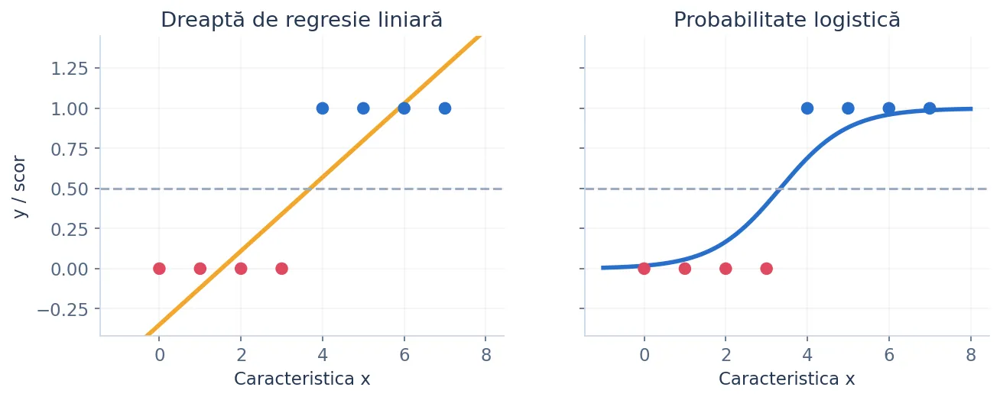
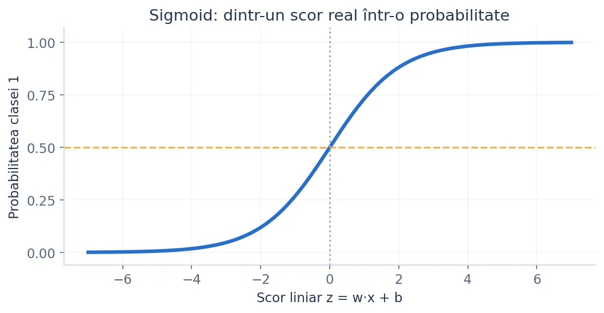
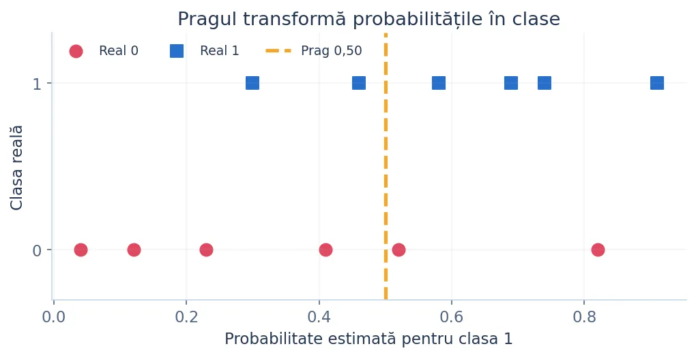
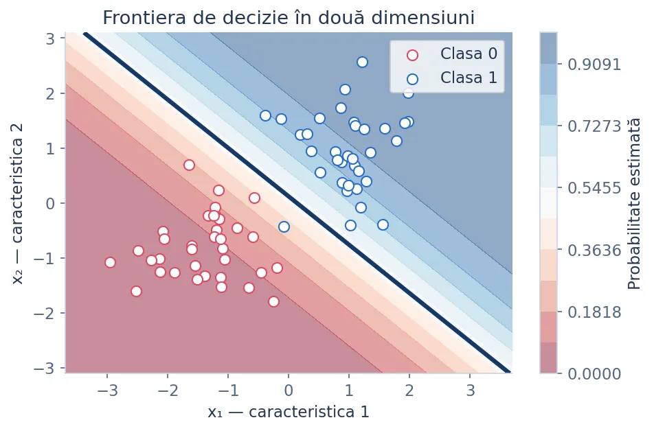
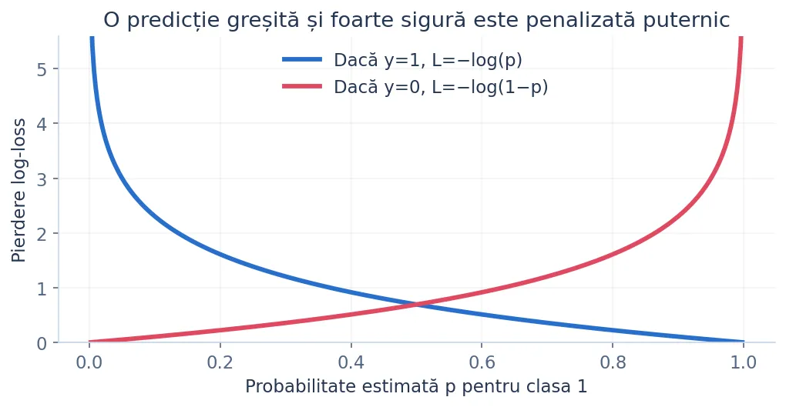
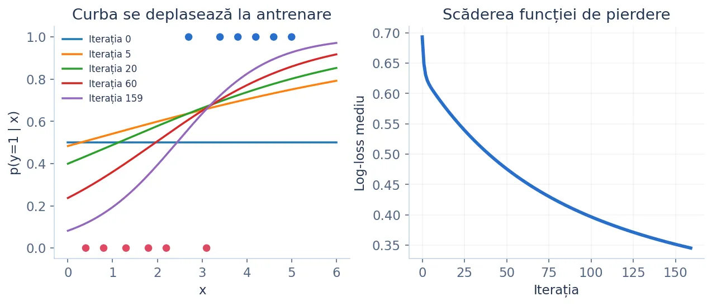
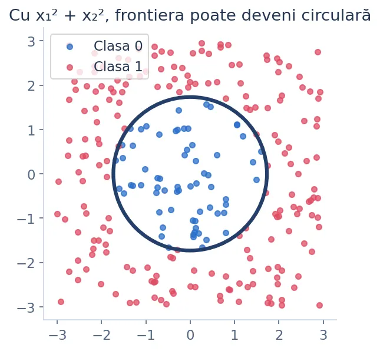

Un model matematic pentru clasificare: de la o dreaptă și o funcție sigmoid la probabilități, optimizare și decizii corecte. Explicații graduale, formule, exemple Python, evaluare și aplicații scikit-learn.
Considerăm un set de elevi: pentru fiecare elev știm numărul de ore de pregătire și dacă a promovat o probă (1 = da, 0 = nu). Scopul este să estimăm probabilitatea promovării pentru un elev nou.
| Ore de pregătire (x) | Etichetă reală (y) |
|---|---|
| 1 | 0 — nu a promovat |
| 2 | 0 — nu a promovat |
| 3 | 0 — nu a promovat |
| 4 | 1 — a promovat |
| 5 | 1 — a promovat |
Regresia liniară din lecția 2.1 estima un număr real ŷ. În acest exemplu, eticheta poate fi numai 0 sau 1. În schimb, o probabilitate p ne spune cât de sigur este modelul că observația face parte din clasa 1. Dacă p = 0.80, modelul atribuie clasei 1 o probabilitate de 80%; aceasta nu este o garanție despre rezultatul efectiv.
O întrebare firească: dacă putem potrivi o dreaptă prin puncte cu etichete 0 și 1, de ce să nu spunem „clasa 1 dacă rezultatul este cel puțin 0,5”?

Începem, la fel ca în regresia liniară, cu un scor calculat printr-o dreaptă:
În loc să folosim direct scorul z, îl introducem în funcția sigmoid, care transformă orice număr real într-o valoare strict între 0 și 1.

Pentru o singură trăsătură, curba sigmoid trasată peste dreapta z = wx+b este o curbă în „S”. Interceptul deplasează zona de tranziție; semnul și valoarea absolută a lui w controlează sensul și abruptitudinea creșterii.
import math
def sigmoid(z):
if z >= 0:
return 1 / (1 + math.exp(-z))
ez = math.exp(z)
return ez / (1 + ez)
for z in [-2, 0, 2]:
print(z, round(sigmoid(z), 3))
-2 0.119 0 0.5 2 0.881
Valoarea obținută prin sigmoid nu este încă eticheta finală. Alegem un prag t, de regulă 0,5, și decidem clasa.

Dacă pragul este 0,5, iar p = 0,62, prezicem clasa 1; dacă ridicăm pragul la 0,7, aceeași observație este clasificată drept clasa 0. Modificarea pragului nu reantrenează modelul.
import math
def sigmoid(z):
return 1 / (1 + math.exp(-z))
def clasifica(x, w, b, prag=0.5):
probabilitate = sigmoid(w * x + b)
eticheta = 1 if probabilitate >= prag else 0
return probabilitate, eticheta
for prag in [0.5, 0.7]:
p, cls = clasifica(3, w=1.0, b=-2.5, prag=prag)
print(prag, round(p, 3), cls)
0.5 0.622 1 0.7 0.622 0
În practică, rezultatul unui elev nu depinde doar de numărul de ore. Putem adăuga prezența la laborator, exercițiile rezolvate sau scorul de simulare.
Fiecare x_j este o caracteristică, fiecare w_j este coeficientul ei și b este termenul liber. Mai întâi calculăm scorul liniar z, apoi folosim sigmoidul pentru probabilitate.
Pentru două caracteristici, condiția w₁x₁ + w₂x₂ + b = 0 este ecuația unei drepte în plan. Pentru trei caracteristici este un plan în spațiu, iar pentru mai multe — un hiperplan. Această frontieră este liniară în spațiul caracteristicilor folosite.

Când avem sute de exemple și multe caracteristici, scrierea fiecărei formule în parte devine greoaie. Matricele păstrează aceleași calcule, într-o formă compactă.
Presupunem trei elevi și două caracteristici. Matricea X are 3 rânduri (câte unul pentru fiecare elev) și 2 coloane (câte una pentru fiecare caracteristică). Vectorul w are 2 coeficienți, iar vectorul z are 3 scoruri.
import numpy as np
X = np.array([[1, 2],
[2, 3],
[4, 5]], dtype=float)
w = np.array([0.4, -0.2])
b = 0.5
z = X @ w + b
p = 1 / (1 + np.exp(-z))
print(np.round(z, 2))
print(np.round(p, 3))
Sigmoidul poate fi inversat. Dacă p este probabilitatea clasei 1, raportul p/(1−p) se numește șansă (odds). Logaritmul său este scorul liniar z.
Dacă w₁ crește cu o unitate, atunci log-odds crește cu w₁, când celelalte caracteristici sunt fixe; șansele se înmulțesc cu e**w₁. Asta nu înseamnă că probabilitatea crește întotdeauna cu aceeași valoare: o creștere de scor are alt efect în apropierea lui 0,5 față de aproape 0 sau 1.
Pentru antrenare avem nevoie de o măsură a greșelii. În clasificarea binară, o alegere naturală este log-loss, numită și binary cross-entropy.
Dacă eticheta reală este 1, pierderea este −log(p); dacă eticheta este 0, pierderea este −log(1−p). Predicțiile corecte și încrezătoare sunt recompensate prin pierdere mică, iar cele foarte sigure dar greșite primesc penalizare mare.

import math
def log_loss_observatie(y, p):
eps = 1e-12
p = min(max(p, eps), 1 - eps)
return -(y * math.log(p) + (1 - y) * math.log(1 - p))
print(round(log_loss_observatie(1, 0.9), 3))
print(round(log_loss_observatie(1, 0.1), 3))
0.105 2.303
Să presupunem că un model estimează probabilitatea p pentru un elev. Dacă elevul promovează, modelul atribuie rezultatului real probabilitatea p; dacă nu promovează, probabilitatea 1−p.
Pentru observații considerate independente condiționat de caracteristici, înmulțim aceste probabilități. Dorim ca modelul să dea probabilitate cât mai mare etichetelor observate. Logaritmul transformă produsul într-o sumă; schimbarea semnului din plus în minus transformă maximizarea într-o minimizare. Astfel obținem exact binary cross-entropy.
Ne interesează direcția în care trebuie modificați coeficienții pentru a micșora pierderea. Folosim derivata: dacă derivata este pozitivă, micșorăm parametrul; dacă este negativă, îl mărim.
Pentru o observație, înlocuim p = σ(z) în log-loss și aplicăm regula derivării funcțiilor compuse:
Pasul 1. Derivata log-loss după probabilitate este −y/p + (1−y)/(1−p).
Pasul 2. Derivata probabilității după scor este dp/dz = p(1−p).
Pasul 3. Înmulțim cele două expresii. Termenii se reduc și rămâne surprinzător de simplu:
Pasul 4. Deoarece z = wx+b, avem dz/dw = x și dz/db = 1. Pentru întregul set de date, facem media contribuțiilor:
Alegem o rată de învățare η („eta”), calculăm gradientul pe setul curent și efectuăm mici actualizări ale parametrilor.
O iterație are următoarele etape: (1) calculăm scorurile z; (2) calculăm probabilitățile p; (3) comparăm p cu etichetele y; (4) obținem gradienții; (5) actualizăm w și b. Repetăm până la o eroare satisfăcătoare sau până la atingerea numărului maxim de pași.

import math
x = [1.0, 2.0, 3.0, 4.0]
y = [0, 0, 1, 1]
w = 0.0
b = 0.0
eta = 0.2
def sigmoid(z):
return 1 / (1 + math.exp(-z))
suma_w = 0.0
suma_b = 0.0
for i in range(len(x)):
p = sigmoid(w * x[i] + b)
eroare = p - y[i]
suma_w += eroare * x[i]
suma_b += eroare
grad_w = suma_w / len(x)
grad_b = suma_b / len(x)
w -= eta * grad_w
b -= eta * grad_b
print(round(w, 3), round(b, 3))
0.1 0.0
Mai jos este o implementare completă, pentru o singură caracteristică. Nu folosim scikit-learn, NumPy sau noțiuni avansate de programare: doar liste, funcții, bucle și math.
import math
def sigmoid(z):
if z >= 0:
return 1.0 / (1.0 + math.exp(-z))
ez = math.exp(z)
return ez / (1.0 + ez)
def antreneaza(x, y, rata=0.12, epoci=1800):
w = 0.0
b = 0.0
n = len(x)
for epoca in range(epoci):
gw = 0.0
gb = 0.0
for i in range(n):
p = sigmoid(w * x[i] + b)
eroare = p - y[i]
gw += eroare * x[i]
gb += eroare
w -= rata * gw / n
b -= rata * gb / n
return w, b
x = [0, 1, 2, 3, 4, 5, 6, 7]
y = [0, 0, 0, 0, 1, 1, 1, 1]
w, b = antreneaza(x, y)
p = sigmoid(w * 4.5 + b)
print('Probabilitate:', round(p, 3))
print('Clasa:', int(p >= 0.5))
Acum fiecare elev este reprezentat printr-o listă de caracteristici, de exemplu [ore, exerciții]. Avem câte un coeficient pentru fiecare coloană, dar principiul rămâne același.
import math
def sigmoid(z):
if z >= 0:
return 1 / (1 + math.exp(-z))
e = math.exp(z)
return e / (1 + e)
def antreneaza(X, y, rata=0.15, epoci=1000):
n = len(X)
k = len(X[0])
w = [0.0] * k
b = 0.0
for _ in range(epoci):
gw = [0.0] * k
gb = 0.0
for i in range(n):
z = b
for j in range(k):
z += w[j] * X[i][j]
e = sigmoid(z) - y[i]
for j in range(k):
gw[j] += e * X[i][j]
gb += e
for j in range(k):
w[j] -= rata * gw[j] / n
b -= rata * gb / n
return w, b
X = [[0, 0], [0, 1], [1, 0], [1, 1],
[2, 1], [2, 2], [3, 2], [3, 3]]
y = [0, 0, 0, 0, 0, 1, 1, 1]
w, b = antreneaza(X, y)
print([round(v, 3) for v in w], round(b, 3))
Pentru mii de exemple sau zeci de caracteristici este mult mai eficientă o implementare vectorizată în NumPy. Varianta de mai sus este intenționat explicită, ca să poată fi urmărită pas cu pas.
NumPy face aceleași operații într-un număr mic de instrucțiuni. Fiecare operație asupra unui vector se aplică tuturor observațiilor.
import numpy as np
X = np.array([[0, 1], [0, 2], [1, 2], [2, 1],
[2, 2], [3, 2], [3, 3], [4, 3]], dtype=float)
y = np.array([0, 0, 0, 0, 1, 1, 1, 1], dtype=float)
w = np.zeros(X.shape[1])
b = 0.0
rata = 0.15
for _ in range(1200):
z = X @ w + b
p = 1 / (1 + np.exp(-np.clip(z, -50, 50)))
eroare = p - y
grad_w = X.T @ eroare / len(y)
grad_b = np.mean(eroare)
w -= rata * grad_w
b -= rata * grad_b
print('Coeficienți:', np.round(w, 3))
print('Intercept:', round(b, 3))
Aici X.T @ eroare calculează, simultan, suma produselor (pᵢ−yᵢ)xᵢⱼ pentru fiecare caracteristică. Este aceeași formulă dedusă matematic, nu un alt algoritm.
eta.eta și verifică evoluția pierderii.Probabilitatea este utilă, dar la final dorim adesea o decizie. Comparăm predicția cu eticheta reală și numărăm cele patru cazuri.
| Real: clasa 1 | Real: clasa 0 | |
|---|---|---|
| Prezicem 1 | TP — pozitiv corect | FP — fals pozitiv |
| Prezicem 0 | FN — fals negativ | TN — negativ corect |
Un fals pozitiv înseamnă că modelul anunță clasa 1, deși realitatea este 0. Un fals negativ înseamnă că modelul ratează o observație din clasa 1. Nu au neapărat același cost practic.
y_real = [0, 0, 0, 1, 1, 1]
y_pred = [0, 1, 0, 1, 0, 1]
tp = fp = fn = tn = 0
for real, pred in zip(y_real, y_pred):
if real == 1 and pred == 1:
tp += 1
elif real == 0 and pred == 1:
fp += 1
elif real == 1 and pred == 0:
fn += 1
else:
tn += 1
print('TP, FP, FN, TN:', tp, fp, fn, tn)
TP, FP, FN, TN: 2 1 1 2
Nu există o singură metrică potrivită pentru toate situațiile. Alegerea depinde de costurile greșelilor și de distribuția claselor.
| Metrică | Ce măsoară | Când este utilă |
|---|---|---|
| Accuracy | Proporția totală a predicțiilor corecte | Clase relativ echilibrate și erori cu cost comparabil |
| Precision | Din toate cazurile prezise pozitive, câte sunt într-adevăr pozitive? | Când fals pozitivele sunt costisitoare |
| Recall | Din toate cazurile pozitive reale, câte au fost găsite? | Când fals negativele sunt costisitoare |
| F1 | Media armonică între precision și recall | Când vrem un compromis și clasele sunt dezechilibrate |
| Log-loss | Calitatea probabilităților, nu doar a etichetelor | Când folosim probabilitățile pentru decizii |
| ROC-AUC / PR-AUC | Calitatea separării pe mai multe praguri | ROC pentru comparație generală; PR mai informativă la clase pozitive rare |
Pragul implicit de 0,5 nu este obligatoriu. Când îl scădem, clasificăm mai multe observații drept pozitive: de regulă crește recall, dar apar și mai multe false pozitive. Când îl creștem, de regulă crește precision, cu riscul de a pierde pozitive reale.
probabilitati = [0.1, 0.3, 0.45, 0.62, 0.75, 0.9]
y_real = [0, 0, 1, 0, 1, 1]
for prag in [0.3, 0.5, 0.7]:
predictii = [int(p >= prag) for p in probabilitati]
tp = sum(a == 1 and b == 1 for a, b in zip(y_real, predictii))
fp = sum(a == 0 and b == 1 for a, b in zip(y_real, predictii))
fn = sum(a == 1 and b == 0 for a, b in zip(y_real, predictii))
precision = tp / (tp + fp) if tp + fp else 0
recall = tp / (tp + fn) if tp + fn else 0
print(prag, round(precision, 2), round(recall, 2))
Ca și în regresia liniară, un model cu coeficienți mari se poate adapta prea agresiv la datele de antrenare. Regularizarea adaugă un cost pentru coeficienții mari, în schimbul unei soluții mai stabile.
În exprimarea simplificată de mai sus, λ mai mare înseamnă regularizare mai puternică. În scikit-learn, parametrul C controlează invers intensitatea regularizării: C mic → penalizare puternică, iar C mare → penalizare slabă. Relația numerică exactă cu λ depinde de convenția de normalizare a funcției obiectiv.
def pas_gradient_l2(X, y, w, b, rata, lam):
n = len(X)
k = len(w)
gw = [0.0] * k
gb = 0.0
for i in range(n):
z = b + sum(w[j] * X[i][j] for j in range(k))
p = 1 / (1 + math.exp(-max(-50, min(50, z))))
e = p - y[i]
for j in range(k):
gw[j] += e * X[i][j]
gb += e
for j in range(k):
w[j] -= rata * (gw[j] / n + lam * w[j] / n)
b -= rata * gb / n
return w, b
Modelul logistic este liniar în caracteristicile pe care le primește. Dacă punctele sunt dispuse în cercuri concentrice, o dreaptă nu le poate separa. Putem construi caracteristici suplimentare precum x₁² și x₂².

from sklearn.datasets import make_circles
from sklearn.model_selection import train_test_split
from sklearn.pipeline import make_pipeline
from sklearn.preprocessing import PolynomialFeatures, StandardScaler
from sklearn.linear_model import LogisticRegression
X, y = make_circles(n_samples=250, noise=0.08, factor=0.45,
random_state=42)
X_train, X_test, y_train, y_test = train_test_split(
X, y, test_size=0.25, random_state=42, stratify=y
)
model = make_pipeline(
PolynomialFeatures(degree=2, include_bias=False),
StandardScaler(),
LogisticRegression(C=1.0, max_iter=1000)
)
model.fit(X_train, y_train)
print('Accuracy pe test:', model.score(X_test, y_test))
Pentru acest exemplu, variabilele X_train, y_train și X_test provin din împărțirea realizată în etapa anterioară. În Pipeline, transformările sunt ajustate numai pe datele de antrenare.
Clasa LogisticRegression din scikit-learn implementează un clasificator logistic cu regularizare implicită. În practică, folosim fit pentru învățare, predict_proba pentru probabilități și predict pentru etichetele finale.
from sklearn.linear_model import LogisticRegression
X = [[0], [1], [2], [3], [4], [5], [6], [7]]
y = [0, 0, 0, 0, 1, 1, 1, 1]
model = LogisticRegression(C=1.0, max_iter=1000)
model.fit(X, y)
noi = [[2.5], [4.5]]
print('Etichete:', model.predict(noi))
print('Clase:', model.classes_)
print('Probabilități:', model.predict_proba(noi))
print('Coeficienți:', model.coef_, model.intercept_)
În predict_proba, fiecare rând conține probabilitățile în ordinea din model.classes_. Pentru clasificarea binară obișnuită cu clasele 0 și 1, coloana a doua este probabilitatea clasei 1. coef_ conține coeficienții, iar intercept_ termenul liber.
Nu este necesar să memorăm toți parametrii; important este să știm ce controlează cei pe care îi folosim frecvent și ce combinații sunt compatibile.
| Parametru | Semnificație | Exemplu |
|---|---|---|
C | Inversul intensității regularizării; valori mici regularizează puternic | C=0.1 sau C=10 |
solver | Metoda numerică de optimizare | lbfgs (uzual), liblinear, saga |
max_iter | Numărul maxim de iterații al solverului | max_iter=1000 |
class_weight | Ponderi asociate claselor | class_weight="balanced" |
fit_intercept | Include termenul liber b | True (de regulă) |
tol | Toleranța pentru oprirea optimizării | tol=1e-4 |
l1_ratio / penalty | Combinație L1/L2; API-ul diferă în funcție de versiune | Verifică documentația versiunii instalate |
random_state | Controlul aleatorului pentru anumiți solveri; nu schimbă datele implicit | random_state=42 |
În versiuni recente ale scikit-learn, parametrul penalty este în curs de depreciere, iar l1_ratio descrie amestecul L1/L2. În versiunile mai vechi se folosea explicit penalty="l1" sau penalty="elasticnet". Exemplele principale de mai jos evită parametrul depreciat și folosesc combinații compatibile.
import sklearn
from inspect import signature
from sklearn.linear_model import LogisticRegression
print('Versiune scikit-learn:', sklearn.__version__)
print(signature(LogisticRegression))
Aceasta este structura pe care o recomand în probleme de concurs: împărțim datele, construim un Pipeline, antrenăm, apoi evaluăm pe date nevăzute. Exemplul folosește setul Iris inclus în scikit-learn și două clase.
from sklearn.datasets import load_iris
from sklearn.model_selection import train_test_split
from sklearn.pipeline import make_pipeline
from sklearn.preprocessing import StandardScaler
from sklearn.linear_model import LogisticRegression
from sklearn.metrics import (
accuracy_score, precision_score, recall_score,
f1_score, confusion_matrix, log_loss
)
iris = load_iris()
X = iris.data[:100] # primele două specii
Y = iris.target[:100]
X_train, X_test, y_train, y_test = train_test_split(
X, Y, test_size=0.25, stratify=Y, random_state=42
)
model = make_pipeline(
StandardScaler(),
LogisticRegression(C=1.0, max_iter=1000)
)
model.fit(X_train, y_train)
pred = model.predict(X_test)
proba = model.predict_proba(X_test)[:, 1]
print('Accuracy:', accuracy_score(y_test, pred))
print('Precision:', precision_score(y_test, pred))
print('Recall:', recall_score(y_test, pred))
print('F1:', f1_score(y_test, pred))
print('Log-loss:', log_loss(y_test, proba))
print(confusion_matrix(y_test, pred))
În proiectele reale, stratify=Y ajută la menținerea proporțiilor claselor în train și test. StandardScaler învață media și abaterea standard doar din train, deoarece face parte din Pipeline. max_iter=1000 permite solverului suficient timp pentru convergență, fără a impune să execute exact 1000 de pași.
Un set de date cu 990 exemple negative și doar 10 pozitive are o problemă diferită de un set 50/50. class_weight="balanced" mărește importanța clasei rare în optimizare; nu înlocuiește evaluarea cu precision, recall și PR-AUC.
from sklearn.datasets import make_classification
from sklearn.model_selection import train_test_split
from sklearn.linear_model import LogisticRegression
from sklearn.pipeline import make_pipeline
from sklearn.preprocessing import StandardScaler
X, y = make_classification(
n_samples=300, n_features=4, n_informative=3,
n_redundant=0, weights=[0.9, 0.1], random_state=42
)
X_train, X_test, y_train, y_test = train_test_split(
X, y, stratify=y, random_state=42
)
model = make_pipeline(
StandardScaler(),
LogisticRegression(class_weight='balanced', max_iter=1000)
)
model.fit(X_train, y_train)
print('Recall pozitiv:', sum((model.predict(X_test) == 1) &
(y_test == 1)) / sum(y_test == 1))
Folosirea ponderilor modifică funcția obiectiv și poate schimba probabilitățile estimate. Dacă este importantă interpretarea lor probabilistică, evaluează calibrarea pe date separate. Alternativ, ajustează pragul în funcție de costurile erorilor, pe setul de validare.
Deși am discutat în principal clase 0 și 1, modelul se poate extinde la trei sau mai multe clase. În loc de un singur scor calculăm câte un scor pentru fiecare clasă, iar softmax le transformă într-o distribuție care însumează 1.
from sklearn.datasets import load_iris
from sklearn.pipeline import make_pipeline
from sklearn.preprocessing import StandardScaler
from sklearn.linear_model import LogisticRegression
X, y = load_iris(return_X_y=True)
model = make_pipeline(StandardScaler(), LogisticRegression(max_iter=1000))
model.fit(X, y)
print(model.predict([X[0]]))
print(model.predict_proba([X[0]]).round(3))
În scikit-learn, solverii precum lbfgs optimizează loss-ul multinomial pentru probleme multiclasă. liblinear nu face asta direct; poate fi combinat cu OneVsRestClassifier dacă avem nevoie de această strategie.
| Problemă | Regresie logistică? | Explicație |
|---|---|---|
| Clasificarea spam / non-spam | Da, adesea | Foarte utilă cu vectori de frecvențe sau TF-IDF |
| Predicția unui preț în lei | Nu | Ținta este continuă: preferă un model de regresie numerică |
| Risc de neplată: da / nu | Da, cu precauții | Oferă probabilități interpretibile; necesită verificarea calibrării și echității |
| Separarea a două clase aproape liniară | Da | Model simplu, rapid și interpretabil |
| Date cu frontieră foarte neliniară | Nu direct | Adaugă features, kernel sau alt tip de model |
| Set cu outlieri severi și erori de etichetare | Cu atenție | Parametrii pot fi influențați de date greșite și de separabilitatea instabilă |
| Date cu multe caracteristici și puține observații | Cu regularizare | Modelul simplu ajută, dar poate totuși supraînvăța |
| Predicție pe serii temporale brute | Nu fără proiectare specială | Ai nevoie de validare temporală și caracteristici relevante |
predict returnează deja clase. Pentru probabilități folosește predict_proba; decision_function returnează scorul.La final, ar trebui să poți explica modelul la tablă, să calculezi un pas de gradient descent manual, să implementezi de la zero un clasificator pentru o trăsătură și să evaluezi corect un model scikit-learn.
p−y → actualizarea parametrilor.Deschide laboratorul interactiv, urmărește aproximativ 20–40 de pași de antrenare, schimbă pragul de decizie și apoi rezolvă exercițiile propuse din secțiunea de mai jos. Pentru aprofundare: documentația oficială scikit-learn, Logistic Regression și referința API.